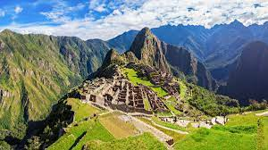

Machu Picchu is a 15th-century Inca citadel located in the Eastern Cordillera of southern Peru on a mountain ridge at 2,430 meters (7,970 ft). Often referred to as the "Lost City of the Incas",it is the most familiar icon of the Inca Empire. It is located in the Machupicchu District within the Urubamba Province above the Sacred Valley, which is 80 kilometers (50 mi) northwest of the city of Cusco. The Urubamba River flows past it, cutting through the Cordillera and creating a canyon with a subtropical mountain climate.
